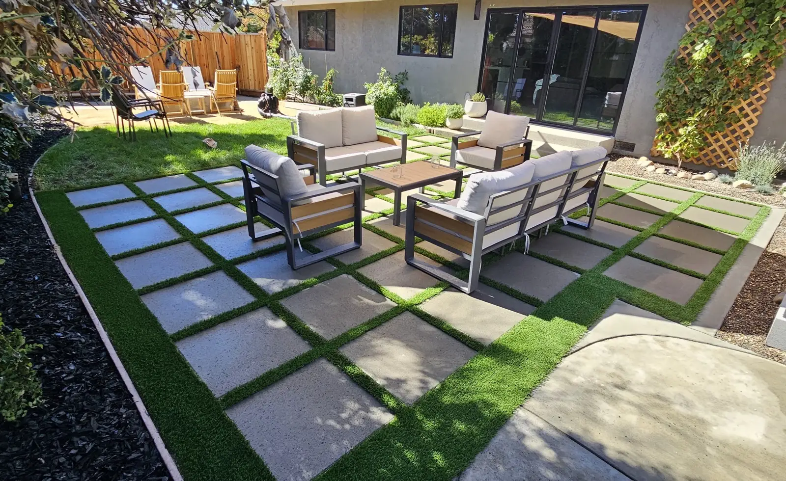
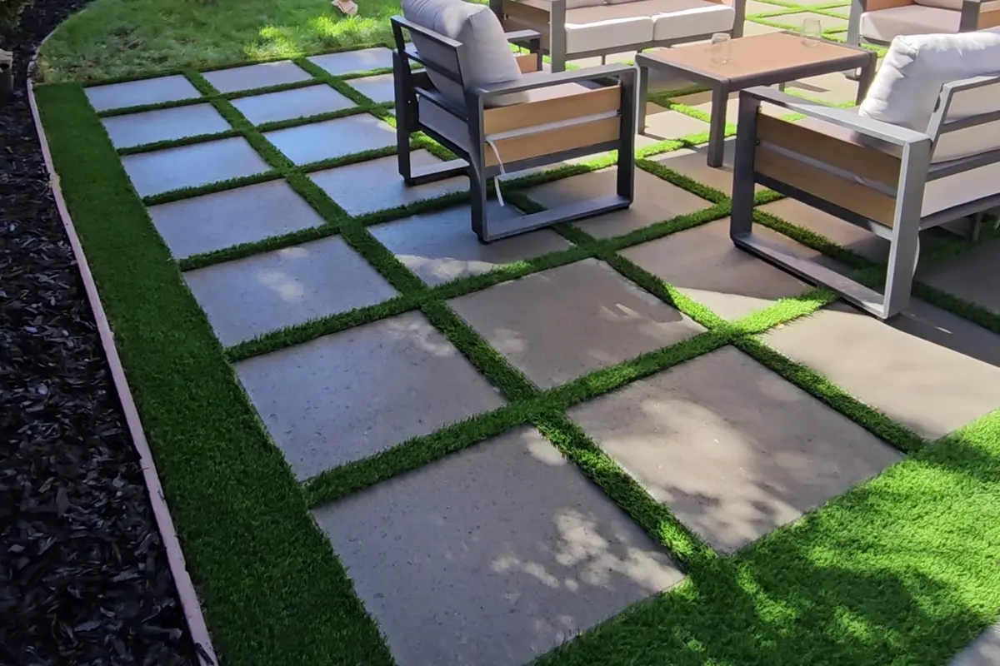
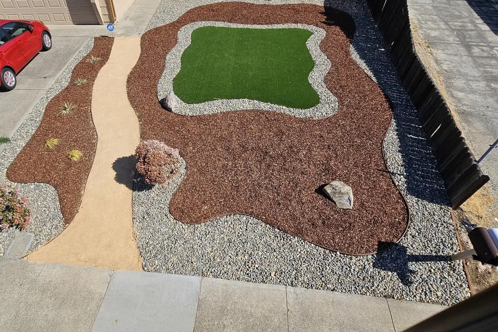
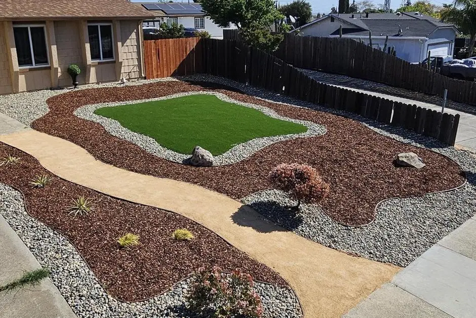
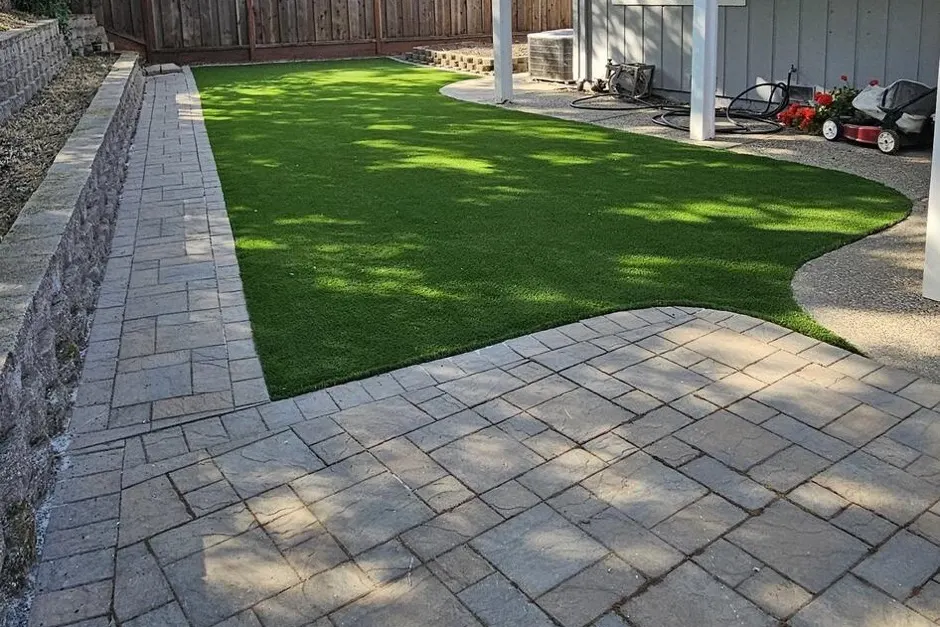
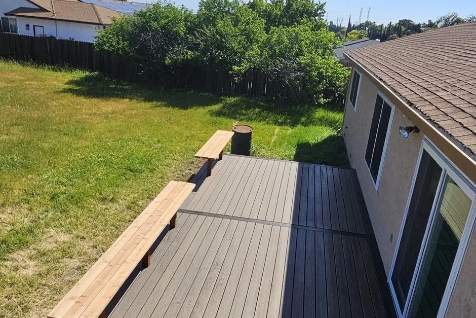
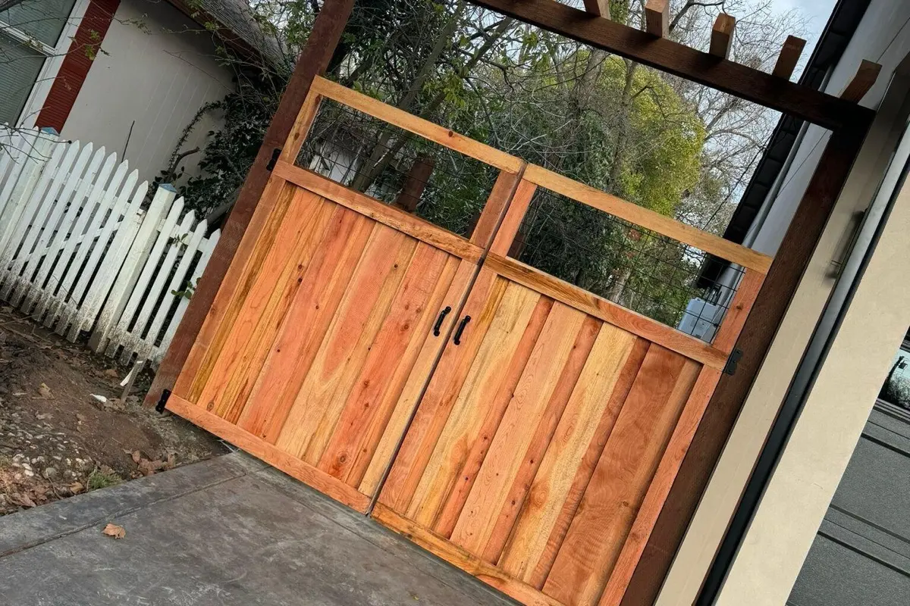
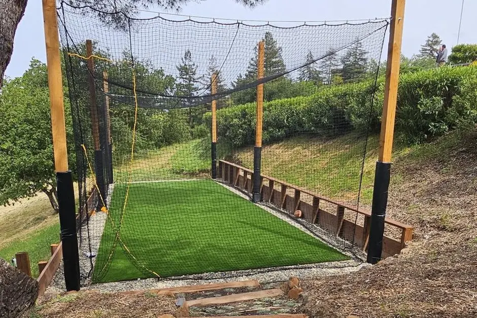
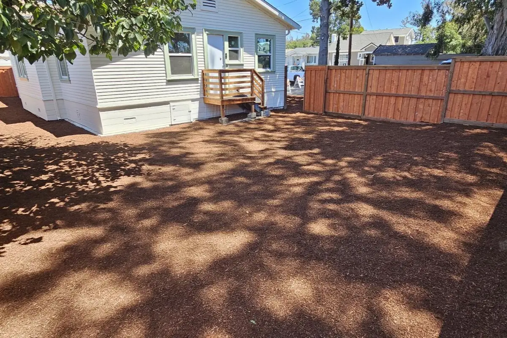

Landscaping & Hardscaping · Bay Point, CA
Landscape maintenance, yard clean-ups, pruning, and full backyard makeovers for Bay Point and the East Bay.
5.0
Average Google Rating
20
Google Reviews
Why Bay Point calls us
Quotes and clean-ups often happen the same day you call — we don't leave you waiting on a callback.
From pruning dozens of rose bushes to a full backyard makeover, one crew handles it start to finish.
We listen to what you want and come back with a plan and options that fit what you're working with.
What we do
Recurring biweekly lawn care and upkeep to keep yards looking sharp.
Overgrowth, debris, and seasonal clean-outs — often turned around the same day.
Roses, fruit trees, hedges, and tall trees, pruned with technique that keeps them healthy.
Full design-build transformations, planned and built by one crew start to finish.
Solutions for water flow and yard leveling so problem spots stop being problems.
Valve swaps and repairs that keep water where it belongs, not on the sidewalk.
Patios, walkways, and rock beds set to hold up under real use.
Recent work








What Bay Point says
Google review“Wow I can't recommend them enough!!! So speedy with the response time and they even came and cleaned up my yard the same day I asked for a quote. My yard looks amazing!! So happy with the results and excited to continue my biweekly cleaning with them!!”
— brittani pygeorge
Google review“I had an amazing experience with Cesar and his crew. They did a full makeover in my backyard. They are so knowledgeable about how to trim each tree. They pruned all my roses (I have over 30 bushes), all my tall trees and bushes.”
— Vivian Pim
Google review“I recently hired Torres & Co. Landscaping & Hardscaping to prune my fruit trees, and I couldn't be happier with the results. They were punctual, professional, and extremely knowledgeable about proper pruning techniques.”
— Carmela Soto
Google review“I gave specific details to Cesar on what I wanted and he was the only Landscaper who was able to come up with a solution well within my Budget.”
— Len Freeman
Hours & area
Serving Bay Point and the surrounding East Bay / Contra Costa corridor.
Call or text (408) 771-9333 for a free quote — Torres & Co. serves Bay Point and the East Bay.